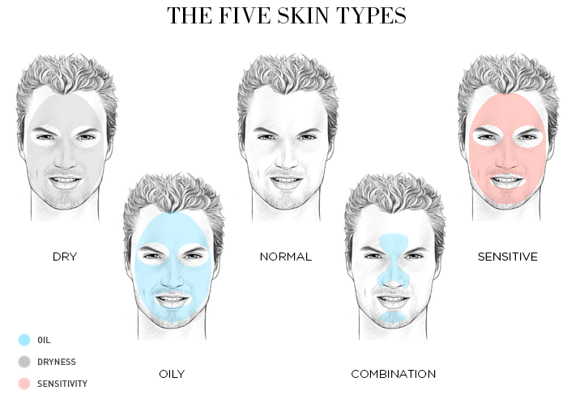
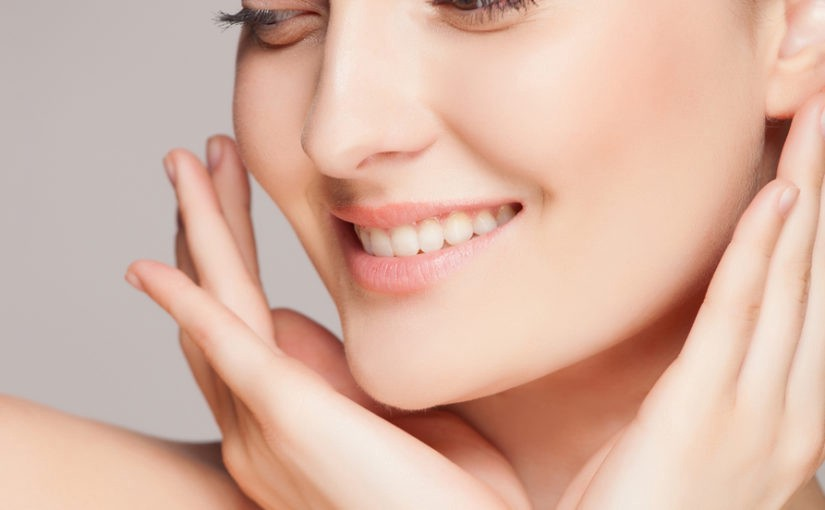

Hãy cùng xem một ngày của mình như nào nhé!! 6 BÍ MẬT CHĂM SÓC TÓC CỦA NGƯỜI NHẬT Tóc thường chịu rất nhiều áp lực bạn làm đẹp, từ uốn, duỗi nhuộm cho đến những tác động từ môi trường bên ngoài… Theo thời gian, mái tóc dần trở nên khô xơ và hư tổn nặng, khiến bạn mất tự tin khi giao lưu và gặp gỡ với người khác. Đã đến lúc bạn bắt tay vào chăm chút cho mái tóc của mình ngay rồi đó. SKIN TYPES  Trong bài viết này, mình muốn nói trước tiên về cách phân biệt các loại da (skin types). Nếu không biết chính xác được loại da của mình như thế nào thì sẽ mơ hồ trong việc lựa chọn sản phẩm và đưa ra chế độ chăm sóc hợp lí. CHĂM SÓC DA MỤN  Chăm sóc da mụn là việc làm rất quan trọng để giúp bảo vệ làn da và hạn chế những tổn thương nặng trên da. Tuy nhiên, cần phải hiểu được những việc nên làm hay không nên làm khi chăm sóc da mụn để góp phần vào nâng cao hiệu quả trong việc phục hồi lại da.